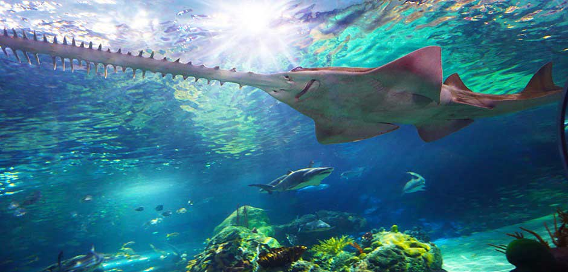

"If the boat is flowing then
the show must go on"
-Benjamin Buckles
Top 3: The Sawfish
The sawfish, also know as the carpenter shark, are characterized by their long and narrow nose, lined with sharp teeths.
They are amongst the largest fish species growing up to 7.6 meters. They are usually found in tropical regions in coastal waters, as well as rivers and lakes.
Sadly, all of these species are endangered and rapidly declining in population. The few remaining are in Northen Australia and the United States.
Sawfish are predators and eat on small fish like crustatians. Some people think they attack big animals like whales and dolphins but nothing is proven.